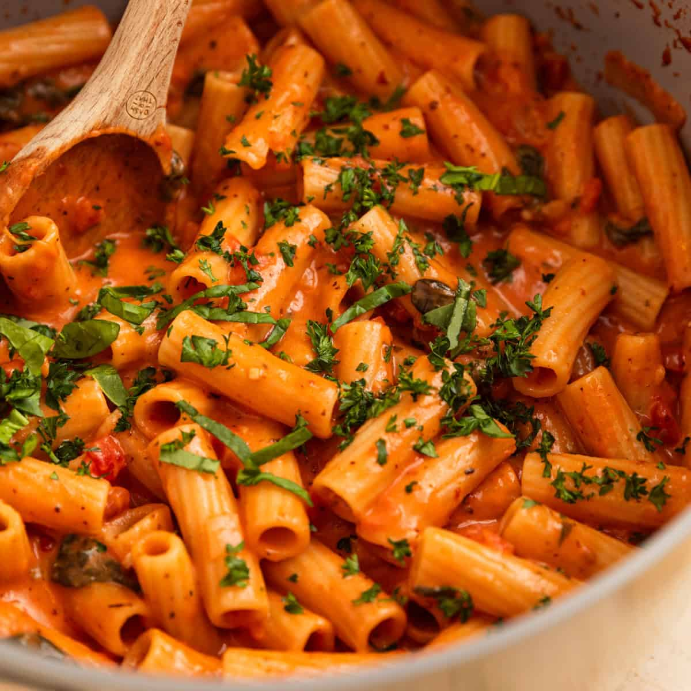

Pasta Recipe

Description
This pasta recipe is a classic Italian dish that combines fresh ingredients to create a flavorful and satisfying meal.
Perfect for a family dinner or a special occasion, this recipe is easy to follow.
Ingredients
- 200g spaghetti
- 2 tablespoons olive oil
- 3 cloves garlic, minced
- 1 can (400g) diced tomatoes
- 1 teaspoon dried basil
- Salt and pepper to taste
- Grated Parmesan cheese for serving
Steps
- Cook the spaghetti according to the package instructions. Drain and set aside.
- In a large skillet, heat the olive oil over medium heat. Add the minced garlic and sauté for 1-2 minutes until fragrant.
- Add the diced tomatoes and dried basil to the skillet. Stir well and let it simmer for 10-15 minutes, allowing the flavors to meld together.
- Season the sauce with salt and pepper to taste.
- Add the cooked spaghetti to the skillet and toss it with the sauce until well coated.
- Serve the pasta hot, garnished with grated Parmesan cheese.
Home